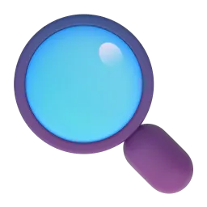

Словник
Предмети світу шістнадцятьма мовами
Шукай будь-якою мовою — українською, англійською, японською чи латиницею (наприклад, taberu). Натисни на картку, щоб побачити всі переклади, приклад і вимову.
Завантажуємо словник…
Результати

Нічого не знайшли
Спробуй інше слово, іншу тему або рівень «Усі».